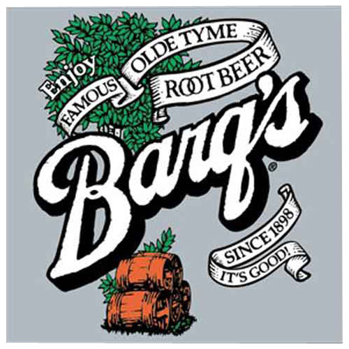

Barq's has bite!
It's good. Since 1898.
Explore

Brief history of Barq's
Edward C. Barq, Sr., the inventor of Barq's Root Beer was born in New Orleans, where he studied Chemistry. In 1898 he moved to Biloxi, Mississippi and bottled the first bottle of Barq's there. Barq's returned to New Orleans in the 1970s.
Blast from the Past
If you're looking for a southern style recipe that ties in a Biloxi favorite, Cafe Jardin in Beau Rivage is the place to go.
12/28/15

Barq’s Root Beer is excited to “bring home the bite” through “Mardi Barq’s”–original artwork by Terrance Osborne.
1/13/16